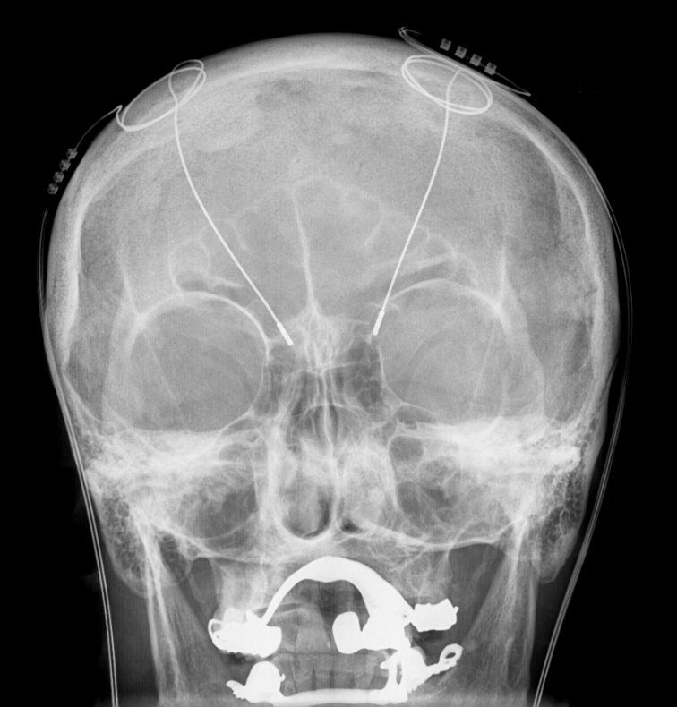

Un universo dentro de tu cerebro. Explicado con rigor.
Enfermedades, diagnóstico y tratamiento del sistema nervioso: ictus, migraña, epilepsia, demencias, párkinson, esclerosis múltiple y nervios periféricos. Además, cómo funciona el cerebro y cómo cuidarlo. Con fuentes en cada página.
Prueba con:
1888: Santiago Ramón y Cajal demostró que el cerebro está formado por células independientes, las neuronas. Es la idea sobre la que se levanta toda la neurociencia moderna.
 Nobel 1906Santiago Ramón y Cajal
Nobel 1906Santiago Ramón y Cajal EnfermedadesSíncopeImagen: Pietro Longhi · Dominio público · Wikimedia Commons
EnfermedadesSíncopeImagen: Pietro Longhi · Dominio público · Wikimedia Commons Cuidar el cerebroLos 14 factores de riesgo de demencia que se pueden cambiarImagen: Alice Barber Stephens · Dominio público · Wikimedia Commons
Cuidar el cerebroLos 14 factores de riesgo de demencia que se pueden cambiarImagen: Alice Barber Stephens · Dominio público · Wikimedia CommonsSantiago Ramón y Cajal (1852-1934), padre de la neurociencia moderna y Nobel en 1906. Foto: dominio público, vía Wikimedia Commons. La historia de la foto
_portrait_(restored).jpg){kind=link}
Enfermedades. Diagnóstico. Tratamiento.
Tres vías conectadas: comprender qué ocurre, saber cómo se estudia y conocer las opciones de tratamiento y rehabilitación.
 Enfermedades
EnfermedadesEnfermedades neurológicas
Ictus, migraña, epilepsia, alzhéimer, párkinson, esclerosis múltiple, ELA, neuropatías y muchas más: qué son, cómo se notan, cómo se diagnostican, cómo se tratan y cuándo consultar.
42 fichas → Diagnóstico
DiagnósticoDe la sospecha a las pruebas
Exploración neurológica, TC, resonancia, electroencefalograma, electromiograma, punción lumbar, PET y DaTSCAN, doppler, genética y test de memoria.
11 fichas →
TratamientosTratar, rehabilitar, acompañar
Trombólisis y trombectomía, antiepilépticos, levodopa, estimulación cerebral profunda, anti-CGRP, fármacos de la esclerosis múltiple, anticuerpos anti-amiloide, toxina botulínica y neurorrehabilitación.
14 fichas →¿Qué necesitas hoy?
Enfermedades de la A a la Z
Antes y después del resultado
El tiempo
es cerebro.
En un ictus grave se pierden unos dos millones de neuronas por minuto. Reconocerlo, llamar al 112 y llegar a un hospital con unidad de ictus a tiempo cambia el pronóstico. Todo lo que hay que saber, de la prevención a la rehabilitación.
Ver el ictusIctus: de la urgencia a la recuperación
Cómo reconocerlo, qué tratamientos hay, cómo se organiza la atención y cómo se previene.
Seis puertas a la neurología
 Anatomía
AnatomíaEl mapa del sistema nervioso
Neuronas, sinapsis, glía, corteza y lóbulos, cerebelo, ganglios basales, tronco, médula, nervios, sistema autónomo y circulación cerebral.
17 artículos → Cerebro y mente
Cerebro y menteCómo funciona el cerebro
Memoria, sueño, dolor, plasticidad, lenguaje, visión, emociones, consciencia y desarrollo: lo que sabe hoy la neurociencia, explicado con claridad.
12 artículos → Personajes
PersonajesLas personas detrás de la neurología
Anatomistas, clínicos, fisiólogos y pacientes que construyeron la neurología, de Galeno y Vesalio a Cajal, Charcot, Levi-Montalcini y Brenda Milner.
30 artículos →Cuidar el cerebroCuidar el cerebro cada día
Ejercicio, sueño, alimentación, tensión arterial, oído, alcohol y tabaco, pantallas, cascos y estrés: lo que de verdad protege el cerebro y lo que es un mito.
12 artículos → Preguntas frecuentes
Preguntas frecuentesPreguntas frecuentes
Respuestas cortas y claras a las dudas más habituales sobre ictus, dolor de cabeza, memoria, epilepsia y otros problemas neurológicos.
10 artículos →Una imagen no es
un diagnóstico.
Muchas resonancias muestran pequeñas manchas, quistes o «hallazgos casuales» sin importancia. Un EEG normal no descarta una epilepsia y uno alterado no siempre la confirma. Por eso explicamos qué significa cada prueba y qué no significa.
Resonancia magnéticaCuándo no hay que esperar
Cara torcida, un brazo que no responde o dificultad para hablar; un dolor de cabeza brusco y explosivo; una crisis que dura más de cinco minutos; fiebre con rigidez de nuca. Son urgencias. Llama al 112.
Cómo reconocer un ictusDescubrimientos que cambiaron la neurología
Cajal y la doctrina de la neurona
Santiago Ramón y Cajal demuestra que el sistema nervioso está formado por células independientes que se comunican por…
Auguste D. y el alzhéimer
Alois Alzheimer presenta el caso de una mujer de 51 años con demencia, y describe las placas y ovillos de su…
La TC
Se hace en Londres el primer escáner de TC a un paciente, para estudiar un tumor…
La trombectomía
Cinco ensayos demuestran que extraer el coágulo con un catéter reduce de forma drástica la discapacidad tras un ictus…
Últimos artículos
Así nace Neurolopedia
Una enciclopedia en español sobre el cerebro y el sistema nervioso, sus enfermedades, sus pruebas y sus tratamientos, con fuentes en cada página.
Leer →Catorce factores para proteger la memoria
La Comisión Lancet calcula que casi la mitad de los casos de demencia se podrían prevenir o retrasar actuando sobre catorce factores de riesgo. Cuáles son y qué hacer en cada etapa de la vida.
Leer →Cajal, la foto de la portada
La imagen que abre Neurolopedia es un retrato de Santiago Ramón y Cajal, el investigador que demostró que el cerebro está hecho de neuronas. Qué hay detrás de él.
Leer →Para repasar y jugar
Glosario
Las palabras de un informe de neurología o de una resonancia, explicadas en una o dos frases.
Abrir →RecursoQuiz
Diez preguntas al día, por tema, con la explicación de cada respuesta.
Abrir →RecursoPreguntas frecuentes
Respuestas breves a las dudas más habituales sobre ictus, dolor de cabeza, memoria y epilepsia.
Abrir →Avances con contexto clínico
Enlaces a las fuentes originales, con lo que conviene mirar en cada una. Que un estudio exista no significa que un tratamiento esté disponible.
Informe mundial de la OMS
Más de un tercio de la población mundial vive con una afección neurológica. Datos de carga, acceso a la atención y planes de acción.
OMS · Salud cerebral ↗Consultar · ClinicalTrials.govEnsayos clínicos
Revisa el diseño, la fase, a quién incluye, con qué se compara y qué resultados tiene antes de hablar de un avance.
ClinicalTrials.gov ↗Consultar · PubMedPublicaciones recientes
Alzhéimer, párkinson, ictus, epilepsia y neuroinmunología. Distingue estudios de laboratorio, ensayos y revisiones.
PubMed ↗Creada por un médico de familia
Alejandro Rosàs, médico de familia con más de 38 años de experiencia en atención primaria y especialista en Medicina Preventiva y Salud Pública. Colegiado en Barcelona, n.º 28574.
Sin milagros ni alarmismo
Ni suplementos que «mejoran la memoria», ni «gimnasia cerebral» que previene el alzhéimer, ni pruebas sin motivo. Explicamos la evidencia, sus límites y cuándo consultar.